فلسطينحكاية وطن
رحلة تفاعلية في جغرافيا فلسطين وتاريخها وتراثها؛ من خريطة المدن والمقدسات إلى خط زمني يمتد من فجر الحضارات إلى الحاضر، ومعرض بصري يروي حكاية وطن.
- النوع
- تجربة سردية
- المحتوى
- خريطة المدن · خط زمني · معرض بصري

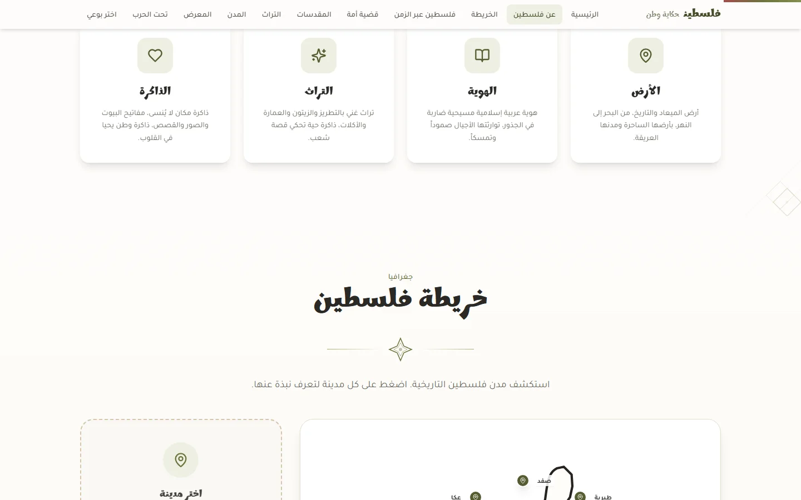
معرض أعمال رقمي · ٢٠٢٦
من وحي الفكرةإلى روعة التنفيذ.
تسعة مشاريع تُترجم الأفكار إلى تجارب رقمية: سردٌ للتاريخ والذاكرة، توعيةٌ تحمي التفاصيل، وتصميمٌ يُروى بالحركة والصورة والكلمة.
الهوية
THE ETHOS — 001لا شيء يبدأ جاهزاً. كل مشروع هنا بدأ سؤالاً، ثم صار حكاية، ثم واجهة تُقرأ وتُعاش. بين الفكرة والتنفيذ، تعيش التفاصيل التي تصنع الفرق.
الفهرس
مرّر على الأسماء لمعاينة سريعة، واضغط لتفتح الفصل.
الأعمال المختارة
من الخريطة التي تحكي وطناً، إلى المحاكاة التي تعلّمك قبل أن تنقر؛ كل فصل هنا مشروع حقيقي كما يعيشه الزائر.
رحلة تفاعلية في جغرافيا فلسطين وتاريخها وتراثها؛ من خريطة المدن والمقدسات إلى خط زمني يمتد من فجر الحضارات إلى الحاضر، ومعرض بصري يروي حكاية وطن.

منصة تعريفية مستقلة تغطي عملية «فجر اليمن» وتطوراتها، مع أقسام للأخبار والبيانات والمحافظات، ومحور خاص بتعز، ومساحة للمصادر والتحقق قبل التصديق.
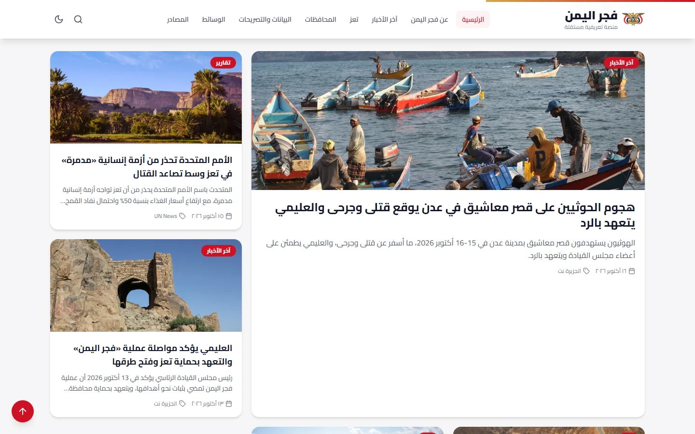
أرشيف رقمي لسوريا: خط زمني للحضارات، ومدنٌ تحكي التاريخ، وتراثٌ ومطبخ وأزياء، ومحطات الألم والتحرير، وحكايات أمل تنتهي بسؤال المستقبل.
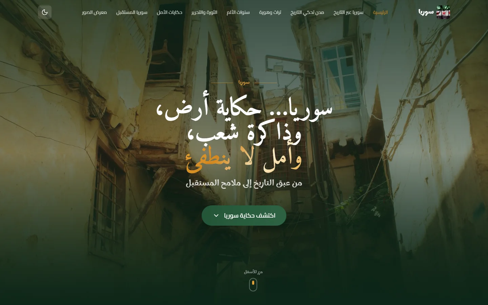
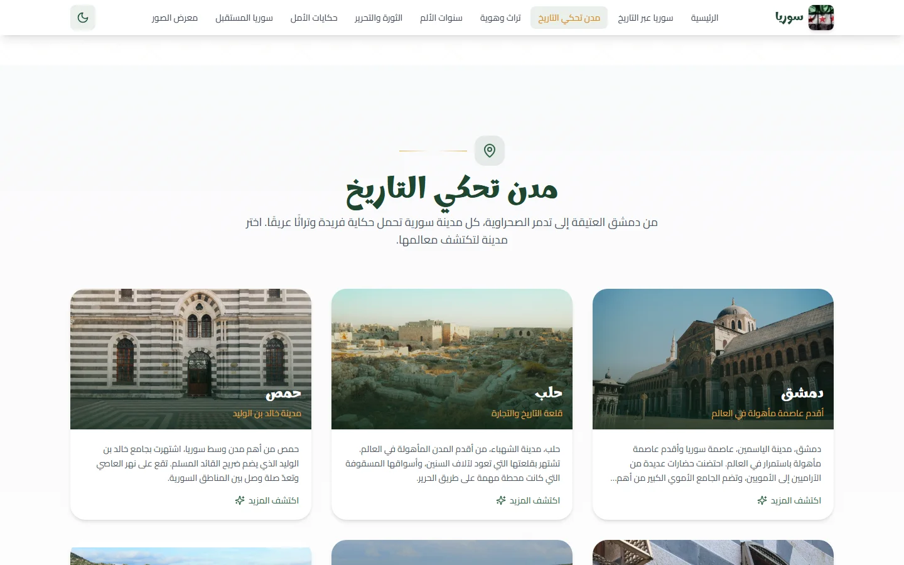
سيرة ذاتية رقمية تحوّل البيانات الشخصية والتعليم والخبرات والمهارات إلى صفحة منظمة قابلة للطباعة، مع وضع ليلي وتجربة قراءة مريحة على الشاشات الصغيرة.
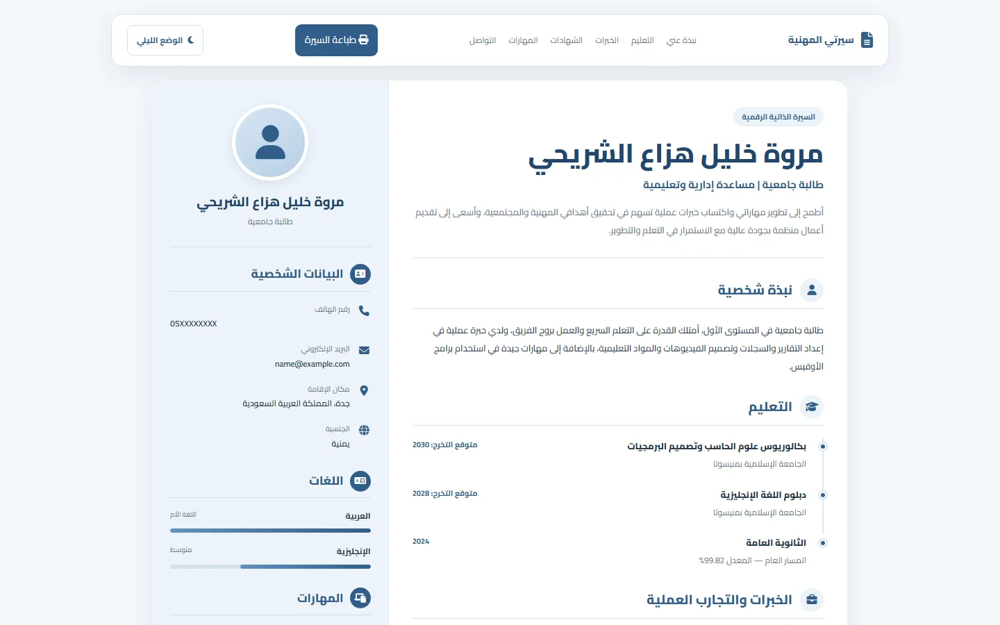
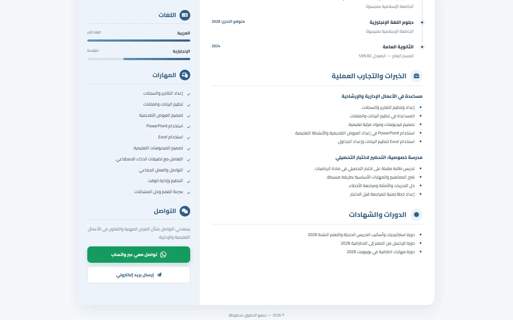
واجهة خدمات تصميم رقمية وتعليمية تجمع الخدمات والأسعار في مكان واحد، مع حاسبة طلب تفاعلية تعرض ملخص التكلفة قبل التواصل والطلب عبر تيليجرام.
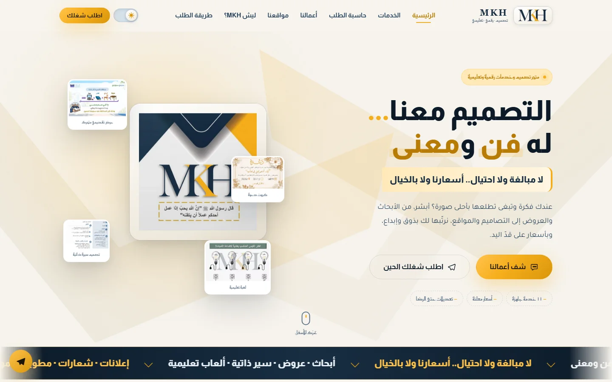
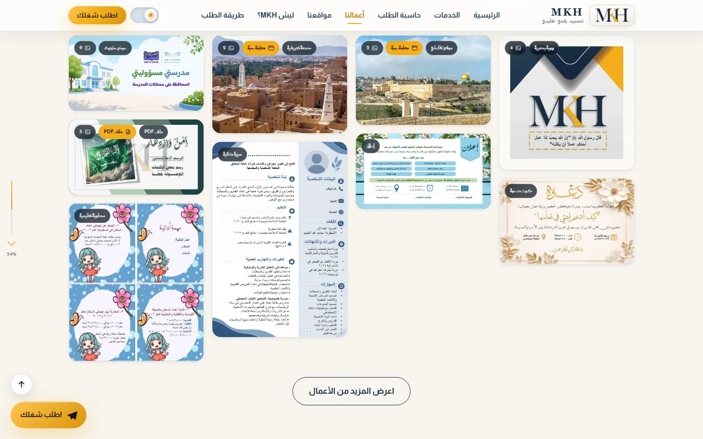
معرض أعمال شخصي يجمع مشاريع المواقع والتجارب الرقمية، ويعرّف بالنهج والأدوات المستخدمة، من تنظيم الفكرة إلى النشر، بلغة بصرية دافئة وتفاصيل متقنة.
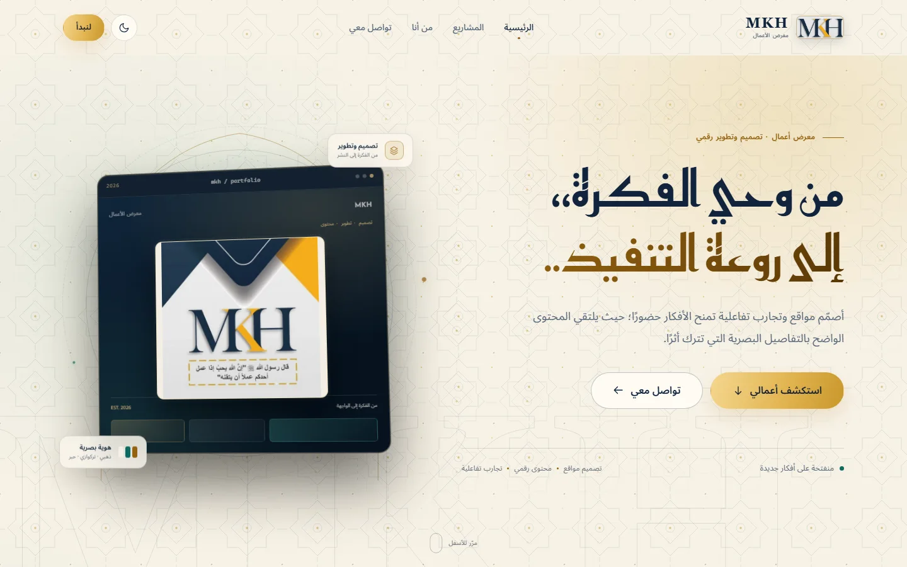
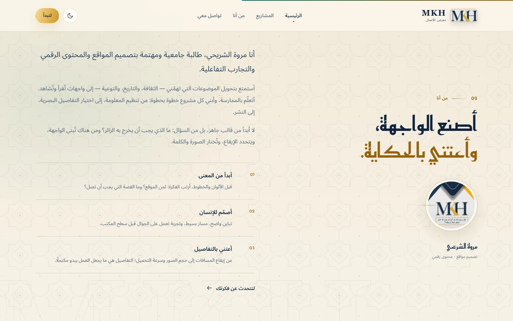
تحقيق بصري تفاعلي في عصر التزييف العميق: خمس عشرة شريحة تفحص كيف تخدع الصورة فهمنا للواقع، بين حالات حقيقية وأرقام واختبار بصري وأدوات للتحقق.
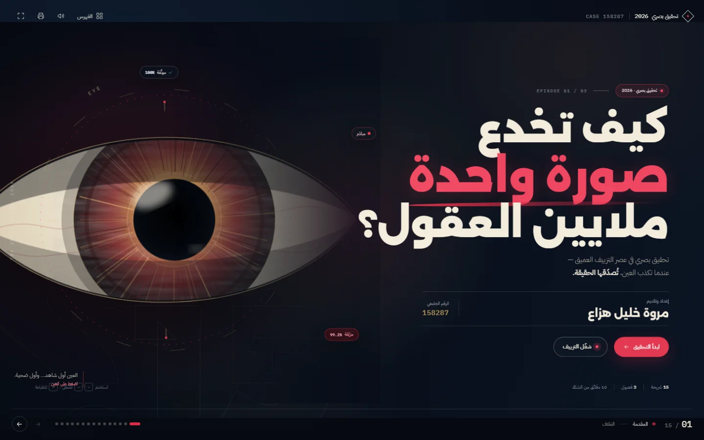
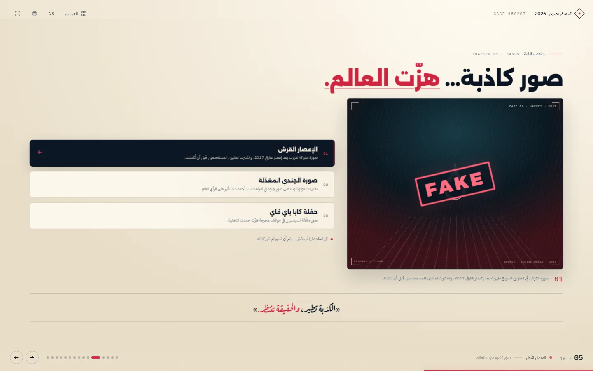
محاكاة توعوية تفاعلية تحوّل خطر الروابط المشبوهة إلى تجربة آمنة؛ ثماني محطات تستعرض التصيد والاختراق والوقاية، وتنتهي باختبار قصير — دون فحص الجهاز أو جمع بيانات.
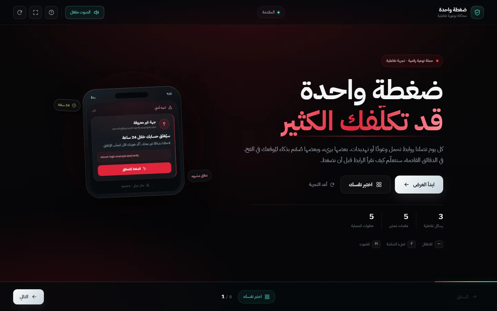
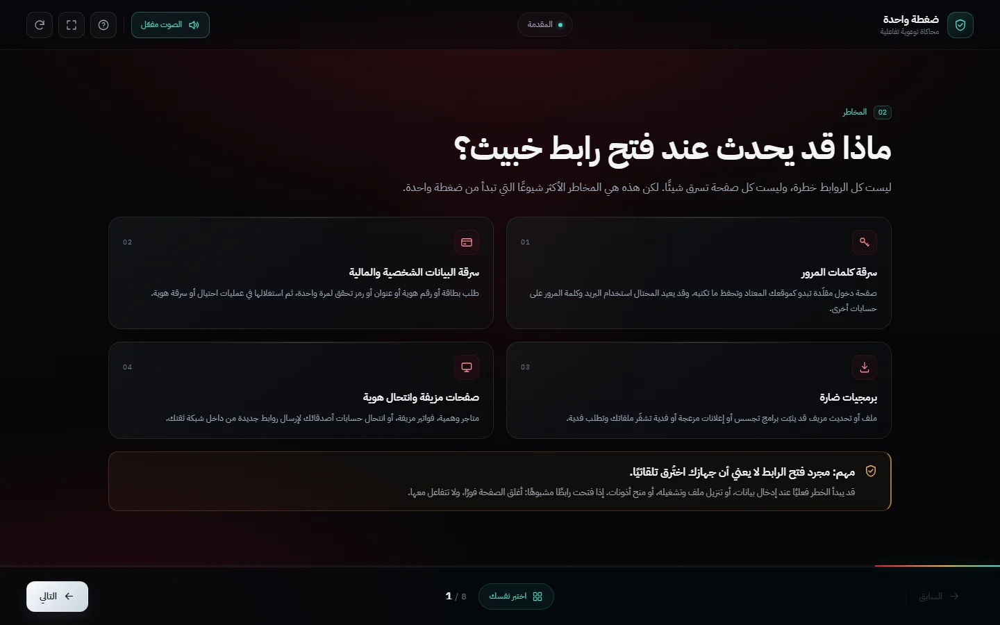
عرض تفاعلي يوثّق رحلة بناء ثمانية مشاريع ويب متنوعة، من الحكاية والذاكرة إلى الخدمات والتوعية، ويستخلص الدروس التي تحوّل كل تجربة إلى خطوة جديدة.
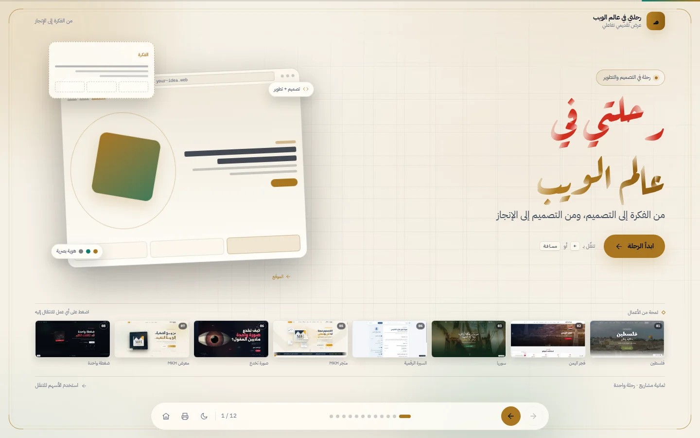
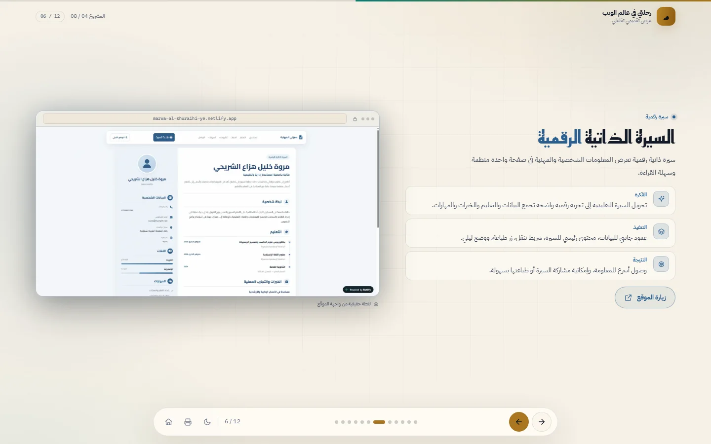
تمّ العرض — تسعة مشاريع
العودة إلى الفهرس«الشريحي» معرض رقمي يجمع تسعة أعمال في السرد والتاريخ، والتوعية، والتصميم. هنا لا تُعرض المشاريع كروابط، بل كتجارب لها فكرة وإيقاع وتفاصيل.
أبدأ كل عمل من سؤال: ما الذي يجب أن يخرج به الزائر؟ ثم تُرتّب المعلومة، ويُختار الإيقاع، ويُبنى المسار. أتعلّم بالممارسة، وأعيد مراجعة كل تفصيلة — من حجم الصورة إلى سرعة التحميل — قبل النشر.
الواجهة الجيدة لا ترفع صوتها؛ بل تجعل المعنى مسموعاً.
نبدأ من المعنى والجمهور قبل الألوان والخطوط.
نرتّب المحتوى في مسار يُقرأ ويُشاهد بلا تشتيت.
المسافات، والصورة، والحركة في خدمة المعنى.
تجربة سريعة ومتجاوبة تُختبر على الشاشات قبل النشر.
لنبدأ الحكاية التالية
شاركني الفكرة في سطرين، ودعنا نبدأ من هناك. التواصل عبر تيليجرام مباشرة.
تواصل عبر تيليجرام @MKH_ksa يفتح في تبويب جديدرابط مباشر إلى حساب المعرض على تيليجرام.
معرض أعمال رقمي
الشريحي
من وحي الفكرة إلى روعة التنفيذ